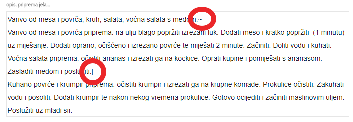

Sadržaj
- Registracija
- Prijava
- Novi klijent
- Ulazni podaci
- Detaljni izračun energetske potrošnje
- Praćenje antropometrijskih parametara
- Izračun
- Dodatna energetska potrošnja
- Dijeta
- Obroci
- Izrada jelovnika
- Moje namirnice
- Moji recepti
- Cijene
- Novi korisnik


Prvi korak u izradi jelovnika je utvrđivanje stanja uhranjenosti pojedinca na osnovi njegovih antropometrijskih veličina.
Unesite visinu (u cm), masu (u kg) opseg struka i bokova (u cm) i odaberite intenzitet tjelesne aktivnosti
* Opseg struka i bokova nisu obavezni
Za nastavak kliknite na dugme ili tab Izračun
Ako želite preciznije odrediti dnevnu energetsku potrošnju kliknite na Detaljni izračun energetske potrošnje
Klikom na Detaljni izračun energetske potrošnje otvara se sekcija u kojemu je moguće izračunati detaljan izračun dnevne potrošnje.
Potrebno je unijeti sve aktivnosti i njihovo trajanje u periodu od 0:00 do 24:00.
Za nastavak kliknite na dugme ili tab Izračun
Klikom na tab Praćenje antropometrijskih parametara otvara se prozor u kojemu se prate antropometrijski parametri u grafičkokm i tabelarnom prikazu.
Podaci koji se prate su masa, visina, opseg struka i opseg bokova.
Cilj je tjelesna masa koju aplikacija daje kao preporučenu tjelesnu masu na osnovi ulaznih parametara.
Uz pretpostavku da je 1 kg masnog tkiva jednako 7000 kcal, i da je dnevni deficit (energetska potrošnja - preporučena energetska potrošnja + dodatna tjelesna aktivnost) jednako 500 kcal
dolazi sa do gubitka tjelesne mase od 2 kg mjesečno.

Korisnici PREMIUM peketa osim standardnih obroka mogu kreirati i vlastite obroke sa vlastitim nazivima i preporukama.
Broj obroka je limitiran na 8 dok je minimalni broj obroka 3.
Moje obroke možete spremiti za kasnije korištenje. Aplikacija automatski sprema moje obroke za svakog klijneta posebno.


* Napomena: Uključivanje ili isključivanje naziva i opisa jela je moguće samo ako su se u opisu jela koristili separatori. Za odvajanje naziva od jela koristit se separator ~ (Alt+1(!)). Ako imate više jela unutar jednog obroka, jela odvajajte separatorom | (Alt+w). Separatore koristite samo ako u ispisu želite odvojeno isključiti ili uključiti naziv jela i opis jela. U protivnom separatore nije potrebno koristiti.


Recepte je moguće unositi na dva načina:
Kada izrađujemo recept u prozoru za izradu jelovnika, samo namirnice u trenutnom obroku će se spremiti u recept.

Korisnici STANDARD i PREMIUM paketa imaju mogučnost registracije dodatnog korisnika.
U STANDARD paketu moguće je dodati jednog dodatnog korisnika, a u PREMIUM paketu 4 dodatna korisnika.
Svi korisnici mogu pristupiti zajedničkoj bazi podataka unutar grupe (bazi klijenata, bazi mojih namirnica, bazi mojih jelovnika i bazi mojih recepata).
Nakon registracije dodatnog korisnika moguće je postaviti njegova administracijska prava.
Postoje dvije vrste administratora: Supervizor i Administrator.
Supervizor može dodavati i brisati korisnike, ima pristup svim klijentima, jelovnicima, receptima i namirnica spremljenih od strane svih članova unutar grupe.
Administrator ima pristup svim jelovnicima unutar grupe korisnika ali može uređivati i spremati samo jelovnike koje je sam izradio i ima pristup samo klijentima koje je sam spremio u aplikaciju. Administrator ima pristup svim receptima i namirnicama spremljenih od strane ostalih članova grupe.
Ove postavke se uređuju u Korisničkom profilu